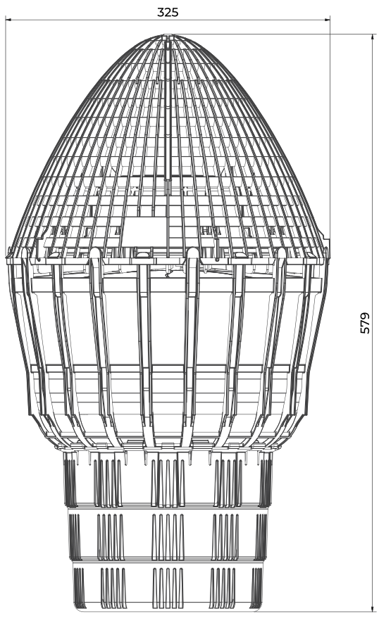

Overview
RhinoPod is a floating cartridge filter that intercepts dissolved-phase pollutants in surface water runoff, including zinc, copper, phosphate (PO4) and polycyclic aromatic hydrocarbons (PAHs).
Runoff from car parks, roads and industrial yards carries sediment, plastics and oils alongside invisible contaminants such as dissolved metals, phosphates and hydrocarbons. RhinoPod targets the dissolved fraction that conventional separators leave behind.
How it works
The pod needs no mounting. It is gravity-held in standing water, and self-guided flow channels carry water through the filter cartridge. There is no electrical demand and head loss is low, so pods can be deployed at local drainage points across a site.
Two-stage treatment
Paired with the SudSceptor hydrodynamic separator, which captures suspended solids, grit, oils and hydrocarbons, RhinoPod forms a dual-stage treatment train covering both gross and dissolved pollutants.

Features & benefits
- Targets dissolved zinc, copper, phosphate and PAHs
- No mounting, gravity-held in standing water
- Self-guided flow channels
- No electrical demand, low head loss
- Retrofit-ready, no disruption to surface finishes
- Surface or subsurface installation
Where it goes
- Road gullies (450 to 600 mm)
- GRP or precast chambers, with 1 to 4 pods
- Oil interceptors and retrofit drainage units
- The SERPOD1850 filter tank, with six pods
Applications
Petrol stations, logistics yards, commercial estates and depots: any site with several drainage points where pollutant interception is needed at each outfall.
Specification
| Product | Floating cartridge filter |
|---|---|
| Size | Ø325 mm, 579 mm high |
| Targets | Zinc, copper, phosphate, PAHs |
| Fixing | None, gravity-held in standing water |
| Power | None |
| Hosts | Gullies, chambers, interceptors, SERPOD1850 |
| Install | New build or retrofit |